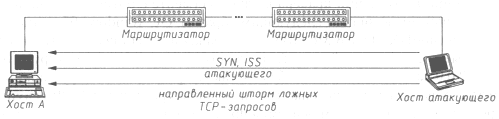

АТАКА НА INTERNET
Рассмотрим нарушение работоспособности хоста в сети Internet при использовании направленного шторма ложных TCP-запросов на создание соединения либо при переполнении очереди запросов.
Из рассмотренной в предыдущем пункте схемы создания TCP-соединения следует, что на каждый полученный TCP-запрос (TCP SYN) операционная система должна сгенерировать начальное значение идентификатора ISN и отослать его на запросивший хост. Но так как в Internet (стандарта IPv4) не предусмотрен контроль за IP-адресом отправителя сообщения, то проследить истинный маршрут, пройденный IP-пакетом, невозможно; и, следовательно, у конечных абонентов Сети нет способа ограничить число запросов, принимаемых в единицу времени от одного хоста. Поэтому возможно осуществление типовой удаленной атаки "отказ в обслуживании", которая будет заключаться в передаче на объект атаки как можно большего числа ложных TCP-запросов на создание соединения от имени любого хоста в Сети (направленный шторм запросов TCP SYN, схема которого приведена на рис. 4.16). При этом атакуемая сетевая ОС в зависимости от вычислительной мощности компьютера либо перестает реагировать на легальные запросы на подключение (отказ в обслуживании), либо, в худшем случае, практически зависает. Это происходит потому, что система должна, во-первых, сохранить в памяти полученную в ложных сообщениях информацию и, во-вторых, выработать и отослать ответ на каждый запрос. Таким образом, "съедаются" все ресурсы системы: переполняется очередь запросов, и ОС вынуждена заниматься только их обработкой. Эффективность данного воздействия тем выше, чем больше пропускная способность канала между атакующим и его целью, и тем ниже, чем больше вычислительная мощность атакуемого компьютера (число и быстродействие процессоров, объем ОЗУ и т.п.).

Рис. 4.16. Нарушение работоспособности хоста в Internet, использующее направленный шторм ложных TCP-запросов на создание соединения
Такую атаку можно было предсказать еще лет двадцать назад, когда появилось семейство протоколов TCP/IP: ее корни находятся в самой инфраструктуре сети Internet, в ее базовых протоколах - IP и TCP. Но каково же было наше удивление, когда выяснилось, что на информационном WWW-сервере CERT (Computer Emergency Respone Team) первое упоминание об удаленном воздействии такого рода датировано только 19 сентября 1996 года! Там эта атака носила название "TCP SYN Flooding and IP Spoofing Attacks" ("наводнение" TCP-запросами с ложных IP-адресов).
Другая разновидность атаки "отказ в обслуживании" состоит в передаче на атакуемый хост нескольких десятков (сотен) запросов TCP SYN в секунду (направленный мини-шторм TCP-запросов) на подключение к серверу, что может привести к временному (до 10 минут) переполнению очереди запросов на сервере (см. атаку К. Митника и пример с ОС Linux 1.2.8). Это происходит из-за того, что некоторые сетевые ОС обрабатывают только первые несколько запросов на подключение, а остальные игнорируют, Таким образом, получив N запросов на подключение, ОС сервера ставит их в очередь и генерирует соответственно N ответов. Затем в течение определенного промежутка времени (тайм-аут <= 10 минут) сервер будет дожидаться сообщения от предполагаемого клиента, чтобы завершить handshake и подтвердить создание виртуального канала с сервером. Если атакующий пришлет такое количество запросов на подключение, которое равно максимальному числу одновременно обрабатываемых сервером сообщений, то в течение тайм-аута остальные запросы будут игнорироваться и установить связь с сервером не удастся.
Мы провели ряд экспериментов с направленным штормом и направленным мини-штормом запросов на различных по вычислительным мощностям компьютерах с разными операционными системами.
Тестирование направленным штормом запросов TCP SYN, проводимое на различных сетевых ОС в экспериментальных 10-мегабитных сегментах сети, дало следующие результаты.
Все описанные далее атаки осуществлялись по определенной методике. Подготавливался TCP-запрос, который при помощи специально разработанной собственной программы в цикле передавался в сеть с соответствующими задержками (вплоть до нулевой) между запросами. При этом циклически изменялись такие параметры запроса, как порт отправителя и значение 32-битного идентификатора SYN. IP-адрес отправителя запроса был выбран так, чтобы, во-первых, этот хост в настоящий момент не был активен в сети и, во-вторых, чтобы соответствующий маршрутизатор, в чьей зоне ответственности находится данный хост, не присылал сообщения Host Unreachable (Хост недоступен). В противном случае хост, от имени (с IP-адреса) которого посылался запрос TCP SYN, получив "неожиданный" ответ TCP АСК от атакуемого сервера, перешлет на него пакет TCP RST, закрывая таким образом соединение.
При передаче по каналу связи максимально возможного числа TCP-запросов и при нахождении кракера в одном сегменте с объектом атаки атакуемые системы вели себя следующим образом: ОС Windows 95, установленная на 486DX2-66 с 8 Мб ОЗУ, "замирала" и переставала реагировать на любые внешние воздействия (в частности, нажатия на клавиатуру); ОС Linux 2.0.0 на 486DX4-133 с 8 Мб ОЗУ также практически не функционировала, обрабатывая одно нажатие на клавиатуре примерно 30 секунд. В результате к этим хостам невозможно было получить не только удаленный, но и локальный доступ. Наилучший результат при тестировании показал двухпроцессорный Firewall CyberGuard: удаленное подключение к нему также не удалось, но на локальных пользователях воздействие никак не сказывалось (все-таки два процессора).
Не менее интересным было поведение атакуемых систем после снятия воздействия: ОС Windows 95 практически сразу же после прекращения атаки начала нормально функционировать; в ОС Linux 2.0.0 с 8 Мб ОЗУ, по-видимому, переполнился буфер, и более получаса система не функционировала ни для удаленных, ни для локальных пользователей, а занималась только передачей ответов на полученные ранее запросы. CyberGuard сразу же после снятия воздействия стал доступным для удаленного доступа.
Если кракер находился в смежных сегментах с объектом, то во время атаки ОС Windows 95 на PentiumlOO с 16 Мб ОЗУ обрабатывала каждое нажатие с клавиатуры примерно секунду, ОС Linux 2.0.0 на Pentium 100 с 16 Мб ОЗУ практически "повисала" - одно нажатие за 30 секунд, зато после снятия воздействия нормальная работа возобновлялась.
Не нужно обманываться, считая, что ОС Windows 95 показала себя с лучшей стороны. Такой результат объясняется следующим: Windows 95 - операционная система, не имеющая FTP-сервера, а следовательно, ей не нужно было сохранять в памяти параметры передаваемого TCP-запроса на подключение к этому серверу и дожидаться окончания handshake.
Направленный шторм запросов на ОС Windows NT 4.0
В связи с особой популярностью у пользователей операционной системы Windows NT мы решили описать эксперименты с данной ОС отдельно. Анализировалась реакция Windows NT 4.0 build 1381 с установленным Service Pack 3 и дополнительным ПО в составе MS IIS 3.0, MS Exchange 5.0, MS SQL 6.5, MS RAS на компьютере со следующей аппаратной конфигурацией: процессор - Pentium 166 ММХ, ОЗУ - 32 Мб, HDD - 2 Гб, сетевая карта - 32-разрядная (фирмы 3COM).
Направленный шторм запросов на 21, 25, 80, 11О и 139 порты
Эксперимент осуществлялся следующим образом. На соответствующий порт атакуемого сервера в цикле TCP SYN отправлялось 9 500 запросов в секунду, что составляет около 50% от максимально возможного количества сообщений при пропускной способности канала 10 Мбит/с. В результате было выведено пороговое значение, определяющее число запросов в секунду, при превышении которого удаленный доступ к серверу становится невозможным.
Во время шторма TCP-запросов на указанные порты наблюдалась следующая реакция системы:
- замедлялась работа локального пользователя (нажатия на клавишу обрабатывались 1-10 секунд, менеджер задач показывал 100-процентную загрузку процессора);
- удаленный доступ но сети к атакуемому серверу на любой порт оказывался невозможным;
- на сервере из-за нехватки памяти переставали запускаться любые процессы (появлялись сообщения "Нет системных ресурсов");
- при шторме на 139-й порт с довольно большой вероятностью (около 40%) система через некоторое время "зависала" ("синий экран");
- после перезагрузки сервера при постоянно идущем шторме на 139-й порт сервер, как правило, "зависал" (вероятность более 50%);
- при попытке обращения с консоли сервера в сеть возникали многочисленные ошибки (пакеты не передавались, система "зависала").
После прекращения шторма запросов TCP SYN у атакуемого NT-сервера наблюдалась следующая реакция:
- из-за нехватки памяти переставали запускаться любые процессы (появлялись сообщения "Нет системных ресурсов"). Удаленный пользователь не всегда мог получить необходимую ему информацию, даже если удаленный доступ к портам сервера был возможен (HTTP-сервер при попытке обращения к ссылке возвращал ошибку);
- при попытке вызова Менеджера задач на локальной консоли система "зависала";
- иногда наблюдались отказы в обслуживании при любом удаленном доступе.
В заключение необходимо отметить, что такие реакции системы на атаку штормом запросов во многом являлись стохастическими, то есть проявлялись не всегда и не всегда были строго детерминированы (в процессе многочисленных экспериментов описанные реакции системы наблюдались лишь с той или иной степенью вероятности). Однако можно утверждать, что, во-первых, при шторме с числом запросов 8 500 пак./с удаленный доступ к серверу невозможен и, во-вторых, в такой ситуации функционирование сервера чрезвычайно нестабильно и серьезно осложняет (замедляет, прекращает и т. д.) работу удаленных пользователей.
Результаты тестирования Windows NT 4.0 после установки Service Pack 4 оказались более обнадеживающими для этой операционной системы. На Windows NT 4.0 Server (Pentium 166) шторм 8 000 запросов в секунду был практически незаметен ни для локального, ни для удаленного пользователя. Но, что любопытно, при этом Windows NT 4.0 Workstation (Pentium 200) с большой долей вероятности "уходила в синий экран" в среднем через одну минуту. Атака на Windows NT 4.0 с Service Pack 4 позволила сделать следующий вывод: нарушить работоспособность системы (за исключением сервера на атакуемом порту) удается не всегда, и результаты атаки от эксперимента к эксперименту могут варьироваться.
Надо заметить, что обычный шторм TCP SYN стал нынче "немодным". Значительно проще достигнуть необходимого результата с помощью более изощренных видов атак. Например, в случае Windows NT с Service Pack 4 отличные результаты дает Land-шторм, можно использовать также и другие подобные воздействия (fragmenation (bonk, teardrop), ping-death и т. д.). Главное - подойти к этому вопросу творчески!
Направленный мини-шторм запросов на 21, 25, 80, 110 и 139 порты
Далее приводятся результаты тестов для той же аппаратно-программной конфигурации Windows NT 4.0 Server.
Направленный мини-шторм запросов на 21-й порт (FTP)
Воздействие осуществлялось следующим образом. На 21-й порт атакуемого сервера в цикле отправлялось 100 запросов TCP SYN в секунду с задержкой 10 мс. Эксперимент показал, что 21-й FTP-порт позволяет одновременно создавать не более 85 соединений с удаленными хостами. При этом тайм-аут очистки очереди в том случае, если клиент не подтверждает открытие TCP-соединения (ответ на пакет SYN АСК от сервера не приходит), составляет от 20 секунд до 1 минуты (в среднем около 30 секунд).
Итак, эксперимент показал, что FTP-сервср позволяет иметь одновременно не более 85 соединений и поддерживает их открытыми в течение 30 секунд. Пока очередь заполнена (во время тайм-аута), удаленный доступ к FTP-серверу невозможен: в ответ на запрос клиента о подключении придет сообщение Connection Refused (В соединении отказано).
В зависимости от следующих параметров:
- максимальное число возможных соединений на данном порту (N);
- количество запросов, генерируемых атакующим, за 1 секунду (V);
- тайм-аут очистки очереди запросов (Т);
- вероятность подключения легального пользователя при мини-шторме (Р)
выведем общую формулу, позволяющую вычислить вероятность подключения удаленного пользователя к серверу:
Р = (N/V)/T х 100%.
Из приведенной формулы видно, что вероятность подключения тем выше, чем больше соединений возможно на данном порту и чем меньше тайм-аут очистки очереди и число запросов атакующего.
Например, во время описанного выше эксперимента вероятность подключения пользователя при мини-шторме (100 запр./с) на FTP-порт составляла:
Р = (85/100)/30 х 100% = 2,8%.
Направленный мини-шторм запросов на 25-й порт (SMTP)
Воздействие осуществлялось аналогично описанному ранее. На 25-й порт атакуемого сервера в цикле отправлялись 100 запросов TCP SYN в секунду с задержкой 10 мс. Тестирование показало, что 25-й SMTP-порт на сервере позволяет одновременно создавать не более 10(!) соединений с удаленными почтовыми серверами, а тайм-аут в среднем составляет около 30 секунд.
Во время данного эксперимента вероятность подключения пользователя на SMTP-порт при мини-шторме составляла:
Р = (10/100)/30 х 100% = 0,3%.
Направленный мини-шторм запросов на 80-й порт (HTTP)
Эксперимент показал, что 80-й HTTP-порт на сервере при мини-шторме (100 запросов в секунду с задержкой 10 мс) позволяет одновременно создавать не более 80 соединений с удаленными HTTP-клиентами (браузерами), при этом тайм-аут составляет в среднем около 30 секунд.
В данном случае вероятность подключения составляла:
Р = (80/100)/30 х 100% = 2,6%.
При исследовании настроек WWW- и FTP-серверов была обнаружена опция, позволяющая установить неограниченное число одновременно подключенных клиентов. Однако на уровне TCP это число все равно ограничено приведенными выше значениями и на практике роли не играет (Microsoft в своем репертуаре!).
Направленный мини-шторм запросов на 110-й порт (РОРЗ)
Тестирование по описанной выше методике позволило сделать вывод, что 110-й РОРЗ-порт па сервере допускает одновременно не более 100 соединений с удаленными хостами при тайм-ауте в среднем около 30 секунд.
При проведении данного эксперимента вероятность подключения пользователя составляла:
Р = (100/100)/30 х 100% = 3,3%.
Направленный мини-шторм запросов на 139-й порт (NETBIOS)
Эксперимент показал, что 139-й порт на сервере позволяет одновременно создавать примерно 1 040 соединений с удаленными клиентами ("родной" для NT порт пользуется явными привилегиями); тайм-аут очистки очереди в среднем также равен около 30 секунд.
Во время такого шторма вероятность подключения пользователя составляла:
Р = (1040/100)/30 х 100% = 34,6%.
Прежде чем сделать окончательный вывод, мы провели анализ дополнительных возможностей настройки модуля TCP в ядре ОС Windows NT 4.0. Исследование показало, что параметр N (максимальное число соединений на данном порту) в текущей версии изменить нельзя, повлиять на параметр V (количество запросов, генерируемых атакующим за 1 секунду) также невозможно, а уменьшать пропускную способность канала несерьезно. Единственный параметр, который можно изменить в ОС Windows NT, - это Т (тайм-аут очистки очереди запросов).
Анализ технической документации Microsoft, найденной только на одном из хакерских сайтов, посвященных безопасности NT (любопытно, что обычный Microsoft TechNet Knoweledge Base не содержит даже этой информации (!!!)) показал, что, используя Registry Editor, можно изменять параметр TcpMaxConnectResponseRetransmissions (это позволит уменьшить время тайм-аута Т). Такой параметр принимает следующие значения:
3 - повтор SYN АСК через 3,6, 12 секунд, очистка очереди через 24 секунды после посылки последнего ответа, Т = 45 с;
2 - повтор SYN АСК через 3, 6 секунд, очистка очереди через 12 секунд после посылки последнего ответа, Т = 21 с;
1 - повтор SYN АСК через 3 секунды, очистка очереди через 6 секунд после посылки последнего ответа, Т = 9 с;
0 - нет повтора, очистка очереди через 3 секунды.
Чтобы снизить вероятность успеха атаки штормом запросов, разумно выбрать значение TcpMaxConnectResponseRetransmissions, равное 1.
Общая картина тестов вполне ясна: WWW-, FTP-, SMTP-, РОРЗ-серверы на базе Windows NT 4.0 Server функционировать не будут! Любой кракер с обычным модемом на 33 600 бит/с сможет генерировать шторм запросов порядка 80 зап./с, что даже при тайм-ауте очистки очереди на сервере в 9 секунд сделает подключение к данным службам практически невозможным.
| Поистине умиляет привилегированность "родного" 139-го порта - более чем двенадцатикратный приоритет (по длине очереди запросов) по сравнению с любыми другими портами! Особенно это "интересно" смотрится вкупе с невозможностью "ручного" изменения длины очереди на определенном порту! Видимо, в компании Microsoft считают, что основная задача NT-сервера заключается в "расшаривании" его ресурсов, a WWW, FTP и т.д. - не столь важное дело! |
Необходимо отметить, что в существующем стандарте сети Internet IPv4 пет приемлемых способов надежно обезопасить операционную систему от этой удаленной атаки. К счастью, взломщик не сможет получить несанкционированный доступ к вашей информации, а только "съест" вычислительные ресурсы вашей системы и нарушит ее связь с внешним миром.
Такие эксперименты по описанной нами методике читатели могут сами провести с любыми ОС и посмотреть, как эти системы реагируют на подобные воздействия.
| « | » |